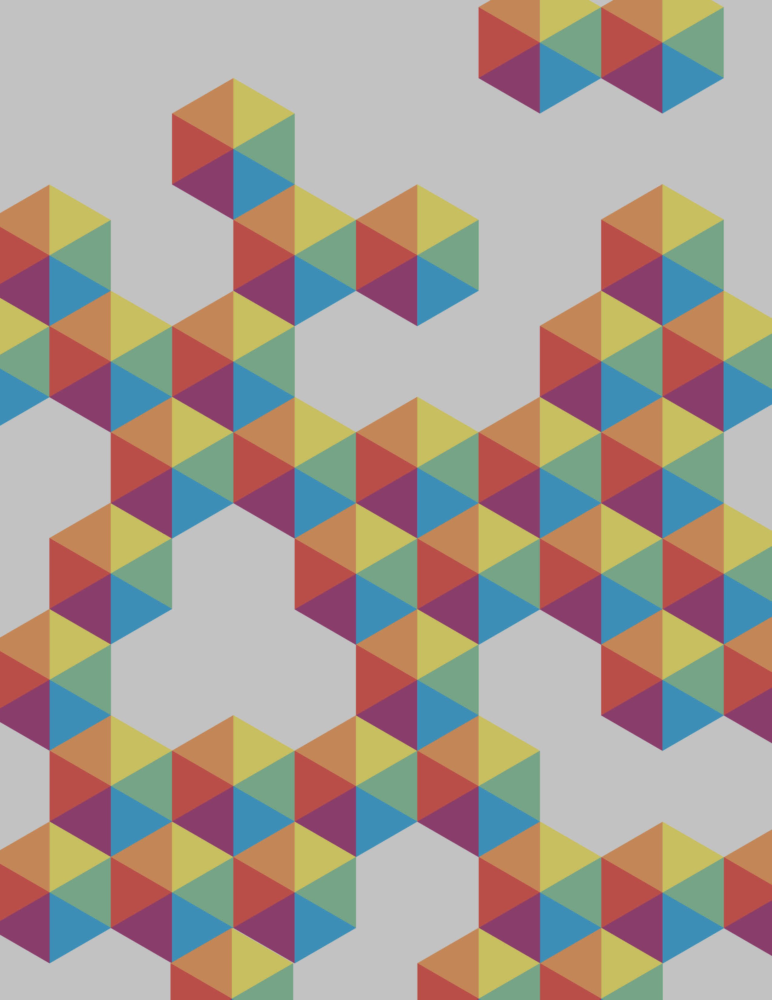

Build . Test . Iterate.
I'm a developer and designer from Los Angeles, California. I currently study Computer Science at Northwestern University with a focus in interfaces and human-computer interaction. I'm also pursuing a certificate in Entrepreneurship.
My experiences range from UX research to UI design and web development. In my spare time, I enjoy skateboarding, playing basketball, and experimenting with new technologies at TheGarage.
I'm actively seeking new opportunities and difficult projects to tackle.
Drop me a line.

Previous Work Experience
-
-
Forkly

Forkly
Software Developer & Mobile UI Designer
August 2015 - Present
A Northwestern-founded startup, Forkly is an intelligent system dedicated to recommending new recipe and ingredient alternatives by learning users' cooking and eating habits.
- Creates an extensive database of food and ingredient classifications using Parse
- Designs the user interface for mobile screens, including user feeds, search, profile, and navigation.
- Helps build and maintain the Forkly mobile app natively across platforms (iOS/Android)
-
-
-

-
DesignWorks
Web Developer & Designer
October 2015 - Present
A Northwestern Student Holdings portfolio company that connects designers and developers with local Chicago businesses for contract work.
-
-
-
-
-
DESIGNATION Labs
Front-end Developer & UI Designer
June 2015 - September 2015
Participated in an 18-week, 70+ hour per week apprenticeship for UX, UI, and front-end development
- Designed and created responsive web apps
- Followed user-centered research, wireframing, rapid prototyping, user testing, and iterating
-
-
-
-
Weinberg Information Technology
IT Support Staff
September 2014 - June 2015
Weinberg College of Arts and Sciences' primary source of technical assistance.
- Imaged Windows/Mac operating systems and setup hardware
- Updated faculty computers to the university standard
- Interacted with customers to assess any computer-related issues
-
-